Congestion Control Design
Host-Based Algorithm Sketch
Most host-based algorithms follow the same general approach, and the differences arise in three key choice points.
Each source independently runs the following logic repeatedly, in a loop: Try sending at a rate R for some period of time. Then, ask: Did I experience congestion in this time period? If yes, then reduce R. If no, then increase R.
One missing piece is: what rate do we initially start sending at? We’ll need some way to pick the initial rate R.
The three key choice points are: How do we pick the initial rate? How do we detect congestion? By how much should we increase and decrease each time?
Detecting Congestion
How does the sender detect if the network is congested? There are two common approaches.
The sender could check for packet loss. This is the approach commonly used by TCP. This approach is good because the signal is unambiguous. Every packet is either marked as lost (timeout or duplicate ack), or not lost. Also, TCP already detects lost packets in order to re-send them, so we don’t need to re-implement this from scratch.
This approach can be bad because sometimes, packet loss is due to corruption (bad checksum), not congestion. In fact, TCP gets confused and behaves poorly when a link is not congested, but frequently corrupts packets. Also, TCP could be confused by packets being reordered. A packet arriving late could be mistakenly considered lost.
Another key downside to this approach is, we detect congestion late. By the time packets are being dropped, router queues are already full and packets are being delayed.
Instead of checking for packet loss, the sender could instead detect congestion by checking packet delay. The sender can measure the time between sending a packet and receiving an ack for that packet. If the sender notices that the delay is increasing, that could be a sign of congestion.
Historically, accurately measuring delay has been considered difficult. Packet delay can vary depending on queue size and other traffic. For many years, packet delay was not widely deployed, though in recent years, Google’s BBR protocol (2016) has shown that delay-based algorithms is possible, and some services (e.g. Google services) have adopted delay-based algorithms.
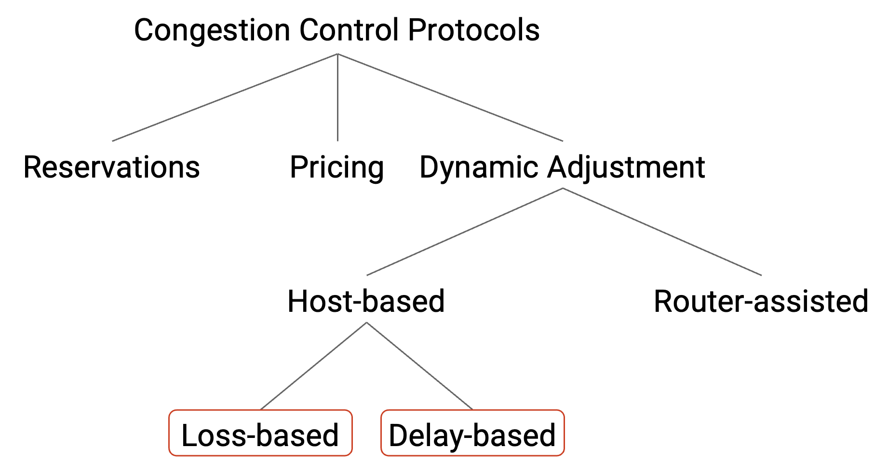
Discovering Initial Rate
When a connection first starts out, we have to figure out an initial rate for sending packets. We can learn an initial rate using a discovery process, where we try a few different rates to get a estimate of the available bandwidth.
We want this discovery process to be safe, so we should start with slow rates. We don’t want to immediately flood the network with packets.
At the same time, we want the discovery process to quickly discover the available bandwidth, for efficiency. To achieve this, we will quickly increase the rate on each subsequent try. If the discovery process takes a long time, we’ve wasted time that we could have spent sending packets at the optimal rate. As an example, suppose we add 0.5 Mbps to the rate every 100ms, until we detect congestion (loss). If the available bandwidth is 1 Mbps, the discovery phase would take 2 iterations = 200 ms. However, if the available bandwidth is 1 Gbps = 1000 Mbps, then the discovery phase would take 2000 iterations = 200 seconds before we ramp up to a good rate, which is far too long. The Internet has a wide variety of link speeds, so both possibilities could occur in real life.
In order to support a slow start but a fast ramp-up, we’ll increase the bandwidth by a multiplicative factor each time (instead of an additive factor). This solution is called slow start, though this is arguably an unintuitive name. In slow start, we start with a small rate that will almost always be much less than the actual bandwidth. Then, we increase the rate exponentially (e.g. doubling the rate each time) until we encounter loss. A safe rate to use is the one just before we encounter loss (we don’t want to use a rate where we experienced loss). Formally, if loss occurs at rate R, then the safe rate is R/2.
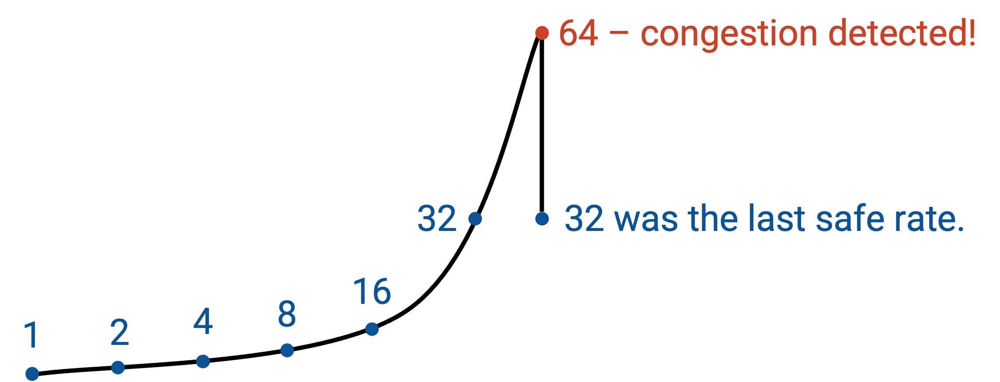
Adjustments: Reacting to Congestion
Recall that after the discovery phase, we will be constantly adjusting the bandwidth, because the network itself is changing, and the available bandwidth is not constant.
The final choice point is deciding how much we should decrease the bandwidth if congestion is detected, and how much we should increase the bandwidth if no congestion is detected.
Our decision will determine how quickly a host adapts to changes in the available bandwidth, which in turn determines how effectively bandwidth is consumed. If we took a long time to adapt to changes and find a good rate, we would spend a lot of time operating at sub-optimal bandwidth, which is inefficient. Slow adaptation can also lead to fairness issues. For example, if I’m using a link’s entire bandwidth, and another connection is opened, I need to quickly adapt and decrease my bandwidth in order to share the link.
Recall that our main goals in a congestion control algorithm are efficiency (use all available bandwidth) and fairness (connections share bandwidth equally). We will need to choose increase and decrease rules that achieve both of these goals.
What rules can we choose from? At a high level, we can either react quickly or slowly. More specifically, fast changes are multiplicative, e.g. doubling or halving the rate on each iteration. Slow changes are additive, e.g. adding 1 to the rate or subtracting 1 from the rate on each iteration. These options create four possible alternatives:
AIAD: additive increase, additive decrease
AIMD: additive increase, multiplicative decrease
MIAD: multiplicative increase, additive decrease
MIMD: multiplicative increase, multiplicative increase
Of these four alternatives, it turns out that AIMD (slow increase, fast decrease) is the best for achieving efficiency and fairness.
Intuitively, AIMD is a reasonable choice because sending too much is worse than sending too little. When our rate is too high, we cause congestion, and packets get dropped. When our rate is too low, we aren’t using all the bandwidth, but at least we aren’t causing congestion.
AIMD leads to the behavior where we slowly increase the rate when there’s no congestion, creeping up to the maximal bandwidth. Then, as soon as we exceed maximal bandwidth and detect congestion, we rapidly decrease. This way, we spend most of our time with the rate too low (preferable), and when the rate is too high (not preferable), we quickly decrease to avoid congestion.
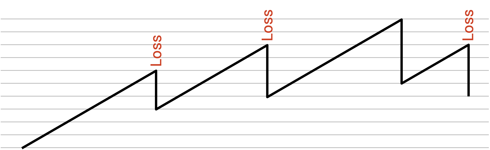
Adjustments: Model
Why is AIMD the best choice for achieving efficiency and fairness? Let’s do a more detailed analysis.
First, notice that all four options do a pretty good job at achieving efficiency. By increasing when we’re below the optimal rate (not congested), and decreasing when we’re above the optimal rate (congested), our rate should always be hovering around the optimal rate in the long run.
However, it turns out that of these four options, AIMD is the only option that leads to fairness. To see why, let’s consider a simple model where there are two connections going over a single link of capacity C. The two connections are sending at rates X1 and X2, respectively. We know that if X1+X2 is greater than C, the network is congested, and if X1+X2 is less than C, then the network is underloaded.
To achieve efficiency, we want the link to be fully utilized, i.e. X1+X2 = C. To achieve fairness, we want X1 = X2, so that both connections are sharing the capacity equally.
To visualize the space of possibilities, consider a 2D plot, where the x-axis is X1 (user 1’s rate), and the y-axis is X2 (user 2’s rate). Every point on this plot represents a possible scenario where each user is sending at a specific rate.
Suppose C=1. To achieve maximum efficiency, we want X1+X2 = 1. We can plot this line on the graph. Every point along this line is using the full available bandwidth.
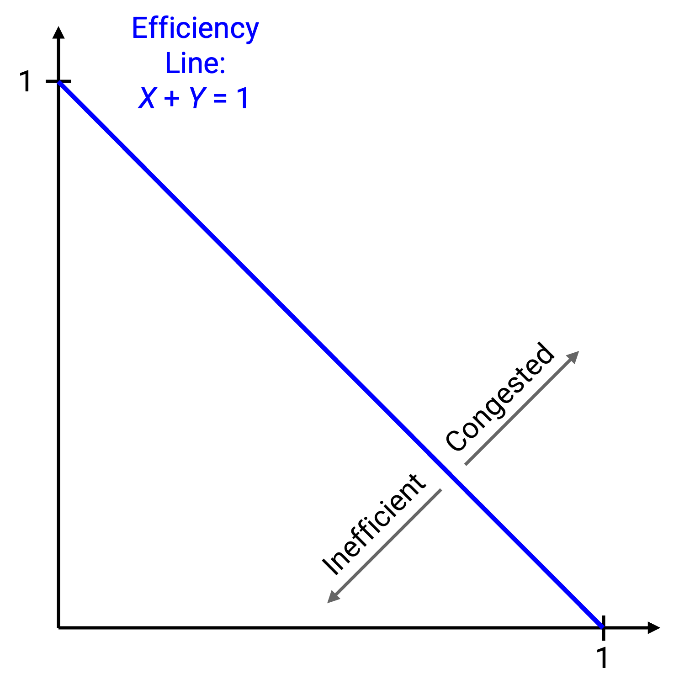
We know that the network is congested when X1+X2 is greater than 1. On the plot, this inequality is the half-plane above the line. We also know that the network is underused when X1+X2 is less than 1, which is represented by the half-plane below the line. This means that all points above the line represent a congested state, and all points below the line represent an underused state.
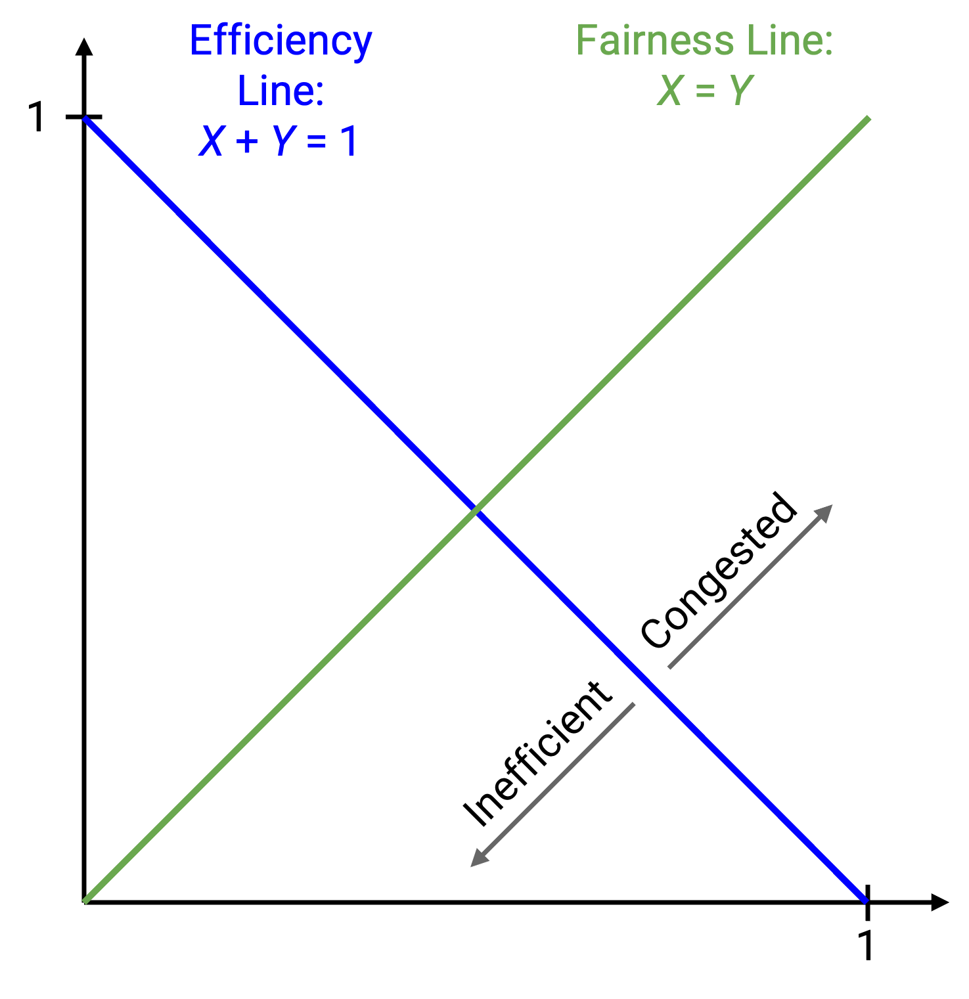
To achieve fairness, we want X1 = X2. We can also plot this line. Every point along this line represents a fair state, where both users are using the same amount of bandwidth. Any point not along this line is unfair.
The ideal state occurs at the intersection of the two lines, when X1 = X2 = 0.5. This point falls on both lines, so it is both fair and efficient.
The point (0.2, 0.5) is inefficient, because we are only using 0.7 bandwidth. Graphically, we are below the efficiency line. The point (0.7, 0.5) is congested and therefore above the efficiency line. The point (0.7, 0.3) is efficient (on the efficiency line), but is not fair (not on the fairness line).
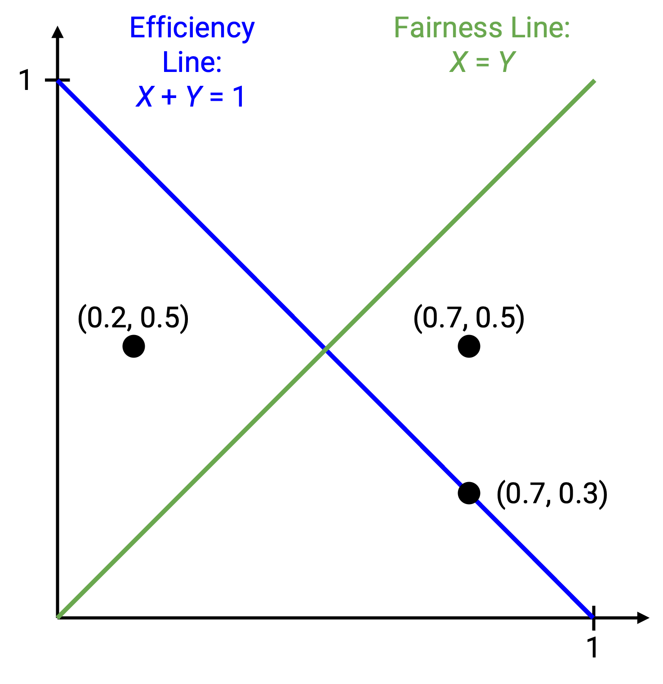
Recall that in our dynamic adjustment algorithm, every sender is independently running the same algorithm to determine their own rate. This means that if the two users detect underuse, both will increase their rate in the same way (additive or multiplicative, depending on our choice of rule). Similarly, if the two users detect congestion, both will decrease their rate in the same way.
What happens if both users additively increase or decrease their rate? If both users increase their rate by adding b, the state (x1, x2) would become (x1+b, x2+b). If both users decrease their rate by subtracting a, the state (x1, x2) would become (x1-a, x2-a).
On the graph, if we make an additive change, the point representing our state moves along a line with a slope of 1.
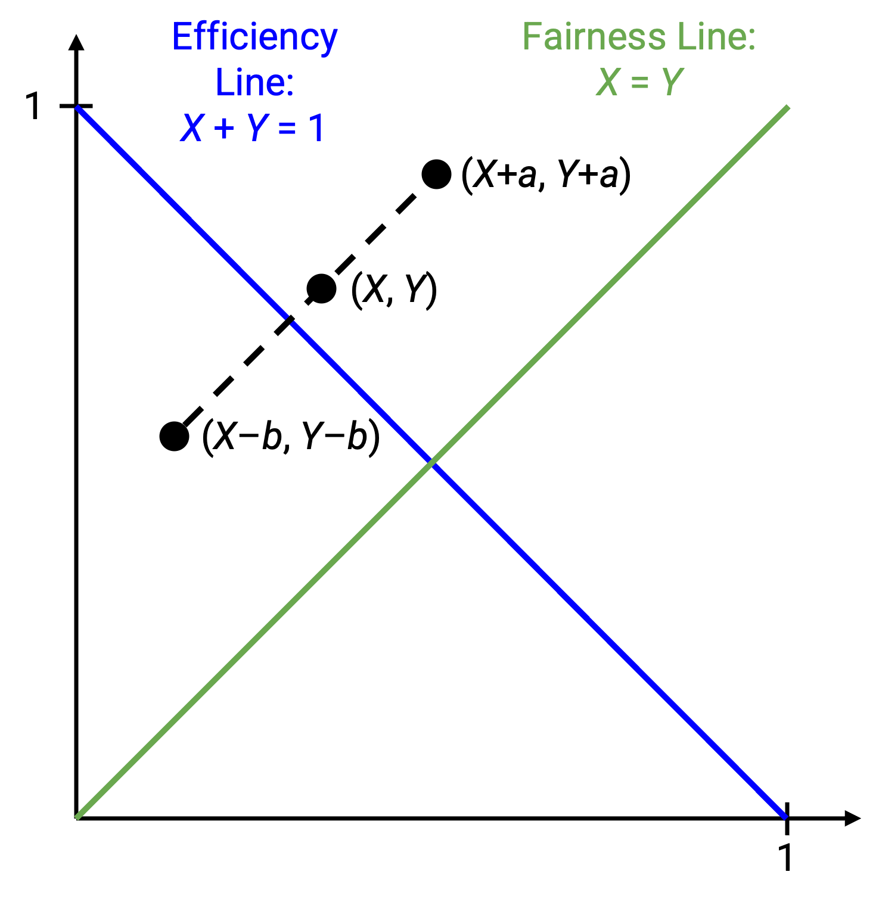
What happens if both users multiplicatively increase or decrease their rate? Multiplying by c transforms (x1, x2) to (cx1, cx2), and dividing by d transforms (x1, x2) to (x1/d, x2/d).
On the graph, if we make a multiplicative change, the point representing our state moves along a line with slope x2/x1. Equivalently, this is the line connecting (x1, x2) to the origin (0, 0).
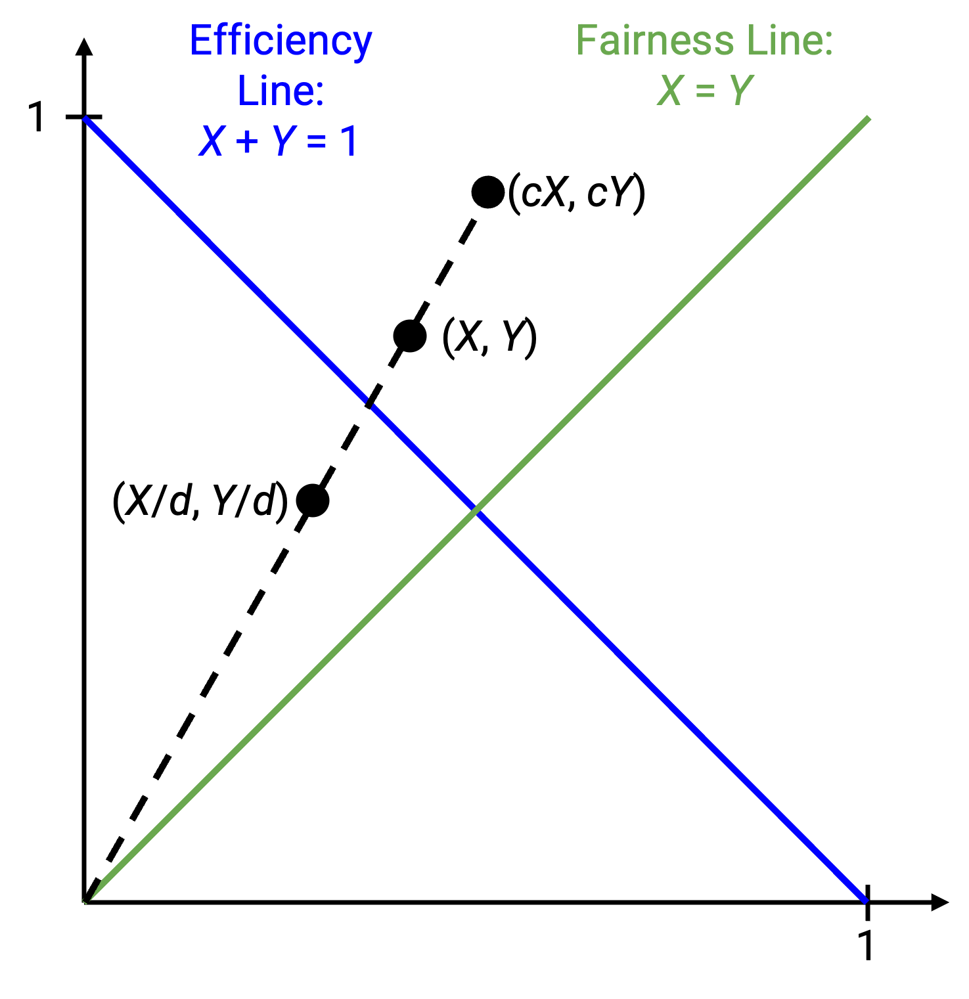
Now, we can apply this model to each of the four increase/decrease options, and see if they cause the point to approach, or move away from, the fairness line. Our goal is for the point to approach the fairness line as we adjust the rates.
Adjustments: AIAD Dynamics
Consider adding 1 on each increase, and subtracting 2 on each decrease. Suppose we have capacity of C = 5. Then from a given starting point, our point would move as follows:
X1 = 1, X2 = 3 (starting point, 4 less than 5, increase)
X1 = 2, X2 = 4 (6 more than 5, decrease)
X1 = 0, X2 = 2 (2 less than 5, increase)
X1 = 1, X2 = 3
We’ve returned to where we started! Our initial allocation was not fair, and after a few iterations, we returned to the same unfair allocation.
In fact, if we look at the difference between X1 and X2 (fair gap is 0), the gap is the same (2) in every iteration. The iterations don’t make our allocation any more or less fair.
We can see this behavior graphically. From a given starting point, if we increase and decrease additively, we will always move along a line of slope 1, never getting any closer to the fairness line.
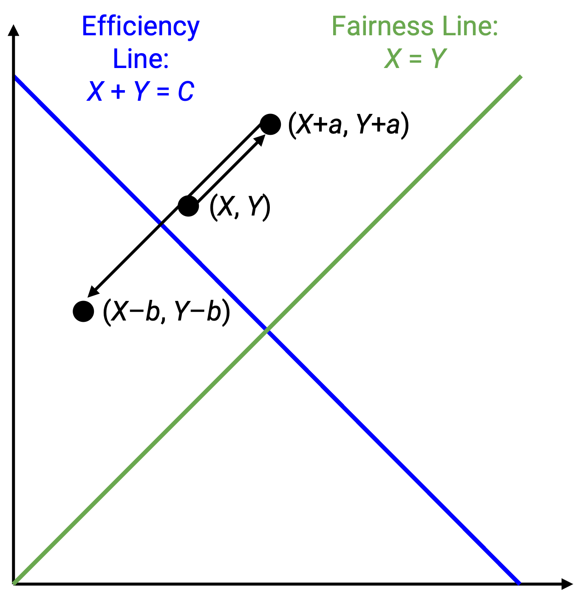
Do note, though, that our point oscillates around the efficiency line, as desired. All four options will have this behavior.
We can also see this behavior algebraically. Suppose X1 and X2 are 5 apart (unfair allocation). If we add the same number to X1 and X2, the resulting X1’ and X2’ are still 5 apart (equally unfair). The same happens if we subtract the same number from both X1 and X2.
In summary, there is no way to close the fairness gap in this approach. If the allocation is initially unfair, it will stay unfair.
You might ask: What if we increased X1 by more (e.g. +2), and X2 by less (e.g. +1)? Remember, our decentralized approach means that everybody is running the same algorithm. Practically, we also have no way for a host to know how much it should add relative to other hosts.
Adjustments: MIMD Dynamics
Consider increasing by doubling, and decreasing by dividing by 4. Again, the capacity is C = 5. From a given starting point, the first few iterations would be:
X1 = 0.5, X2 = 1 (1.5 less than 5, increase)
X1 = 1, X2 = 2 (3 less than 5, increase)
X1 = 2, X2 = 4 (6 more than 5, decrease)
X1 = 0.5, X2 = 1
Again, we’ve returned to where we started, with no improvement in fairness!
We can see this behavior on the plot. When we multiplicatively increase or decrease the rate, we are moving along the line between the point and the origin, and we are never getting any closer to the fairness line.
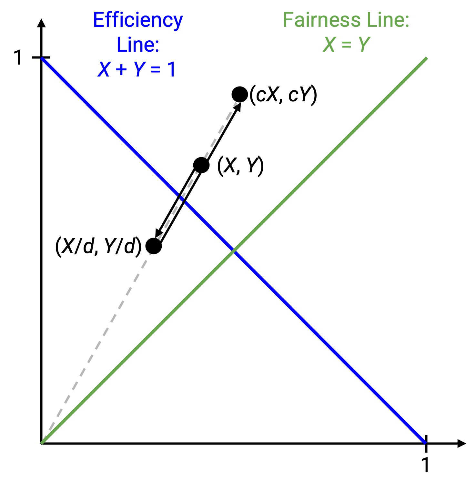
Algebraically, consider the ratio between X2 and X1, i.e. X2/X1 (fair ratio would be 1). In the example above, the ratio is always 2, i.e. X2 always has twice the bandwidth of X1. This ratio stays the same even if we multiply or divide both X1 and X2 by constant factor. Our adjustments don’t get us closer to a fair ratio of 1.
Adjustments: MIAD Dynamics
This one is a little trickier. Consider increasing by doubling, and decreasing by subtracting 1. With C = 5, the first few iterations are:
X1 = 1, X2 = 3 (4 less than 5, increase)
X1 = 2, X2 = 6 (8 more than 5, decrease)
X1 = 1, X2 = 5 (6 more than 5, decrease)
X1 = 0, X2 = 4 (4 less than 5, increase)
X1 = 0, X2 = 8
At this point, X1 has zero bandwidth. Every time we increase by doubling, X1 will still have zero bandwidth. We have actually created the most unfair situation, where X2 has all the bandwidth, and X1 has none.
More generally, if you start with an unfair allocation, MIAD will make the allocation even more unfair, eventually reaching a point where one person has all the bandwidth, and the other person has zero.
To see this algebraically, consider the gaps between X1 and X2. When we increase by doubling, the size of the gap also doubles, from (X2 - X1) to (2 X2 - 2 X1) = 2(X2 - X1). But, when we subtract 1 from both X1 and X2, the gap stays the same. The gap either increases or stays the same, and given enough iterations of increasing and decreasing, the gap will reach maximal unfairness (one person has zero bandwidth forever).
Adjustments: AIMD Dynamics
Finally, consider increasing by adding 1, and decreasing by halving. With C = 5, the first few iterations are:
X1 = 1, X2 = 2 (3 less than 5, increase)
X1 = 2, X2 = 3 (5 not more than 5, increase)
X1 = 3, X2 = 4 (7 more than 5, decrease)
X1 = 1.5, X2 = 2 (3.5 less than 5, increase)
X1 = 2.5, X2 = 3 (5.5 more than 5, decrease)
X1 = 1.25, X2 = 1.5 (2.75 less than 5, increase)
X1 = 2.25, X2 = 2.5 (4.75 less than 5, increase)
X1 = 3.25, X2 = 3.5 (6.75 more than 5, decrease)
X1 = 1.625, X2 = 1.75 (less than 5, increase)
X2 = 2.625, X2 = 2.75
We can see that X1 and X2 are getting closer together, and in fact, they’re approaching the fair allocation of X1 = X2 = 2.5.
Algebraically, we can see that the gap between X1 and X2 is decreasing. Specifically, when we add a constant to both numbers, the gap stays the same. But, when we halve both numbers, the gap also halves, from (X1 - X2) to (X1 / 2 - X2 / 2) = (X1 - X2) / 2. As we alternate increasing and decreasing, the gap will keep halving and approaching 0.
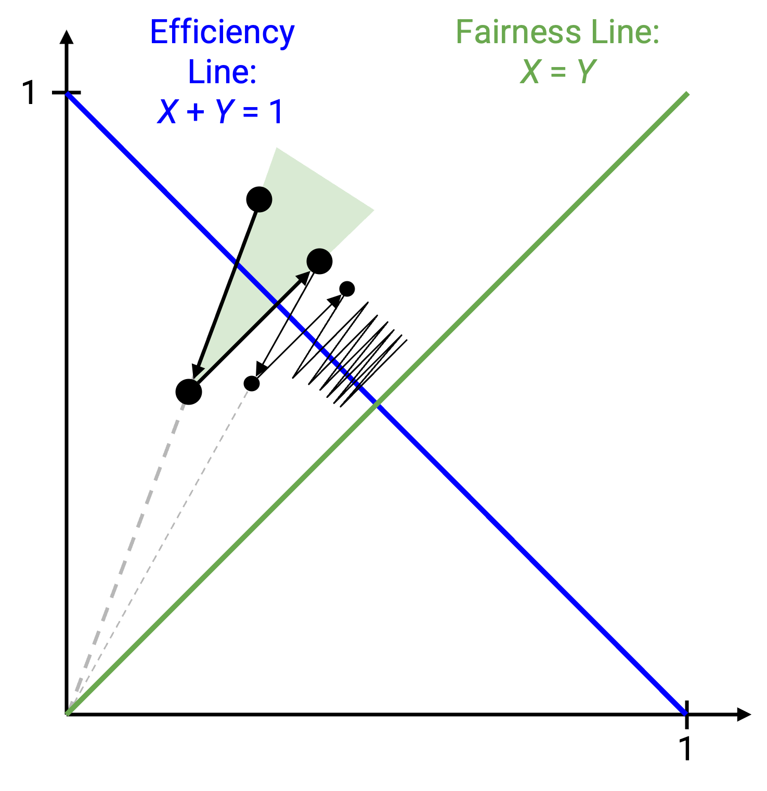
We can see this graphically as well. When we multiplicatively decrease, we are moving along the line through the origin. This line is angled toward the fairness line, and moving downwards along this line means we’re approaching the fairness line. As before, additive increases don’t get us any closer to the fairness line, since we’re moving along a line with slope 1 (parallel to fairness line). But the key realization is that adding don’t move us any further, either. Our only two operations are moving closer, or not getting closer or further away. After many iterations, our point will slowly move closer toward the fairness line.
In summary: AIAD and MIMD retain unfairness, and make no improvements toward fairness. MIAD increases unfairness, and AIMD converges toward fairness.
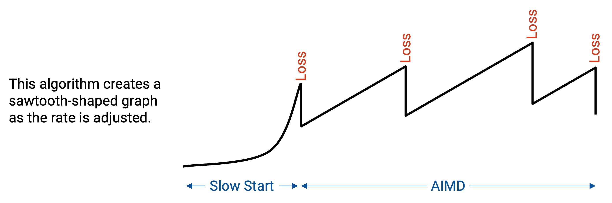